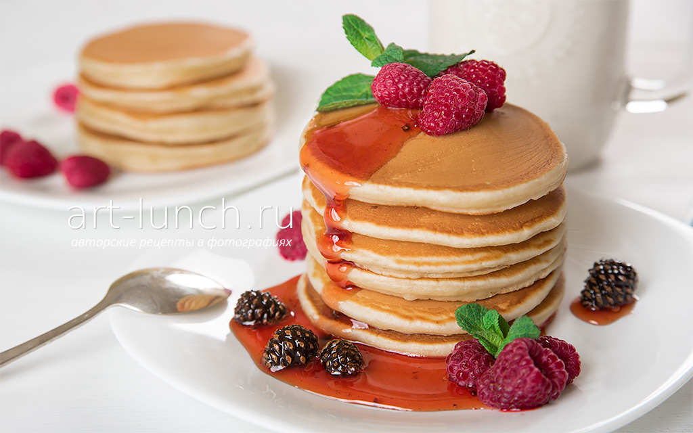

А вы знаете как готовить американские панкейки?Сейчас я вам расскажу.

Нам понадобится:
- молоко 210 мл
- яйцо 1 шт
- мука 200 гр
- разрыхлитель 5 гр
- масло растительное 2.ст ложки
- сахар 30 гр
- В ёмкость добавляем яйцо,сахар и соль
- Взбиваем это всё миксером
- Добавляем молоко и снова всё перемешиваем
- Наливаем растительное масло
- Cнова всё хорошенько перемешиваем
- В отдельной ёмкости смешиваем муку и разрыхлитель,ещё в эту ёмкость можно добавить немного корицы,перемешиваем
- Две ёмкости смешиваем
- Тесто готово!
- Выпекаем панкейки
- Они готовы!